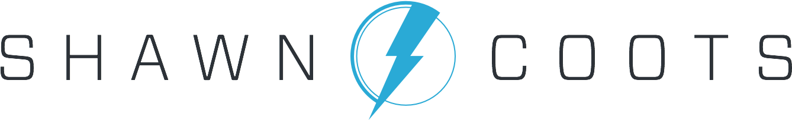

Product Leader Executive
I’m a collaborative Product Leader with a record of success in setting strategies for digital products and delivering innovative user experiences that delight customers and drive business outcomes. I approach management with empathy and have built dynamic and diverse teams with a management style that optimizes creativity and efficiency. I can communicate in a compelling way with internal and external stakeholders and serve as a product advocate to senior leadership. My technical skillset is diverse - developed through previous experiences as a designer, developer, content strategist, filmmaker, graphic designer, and author.